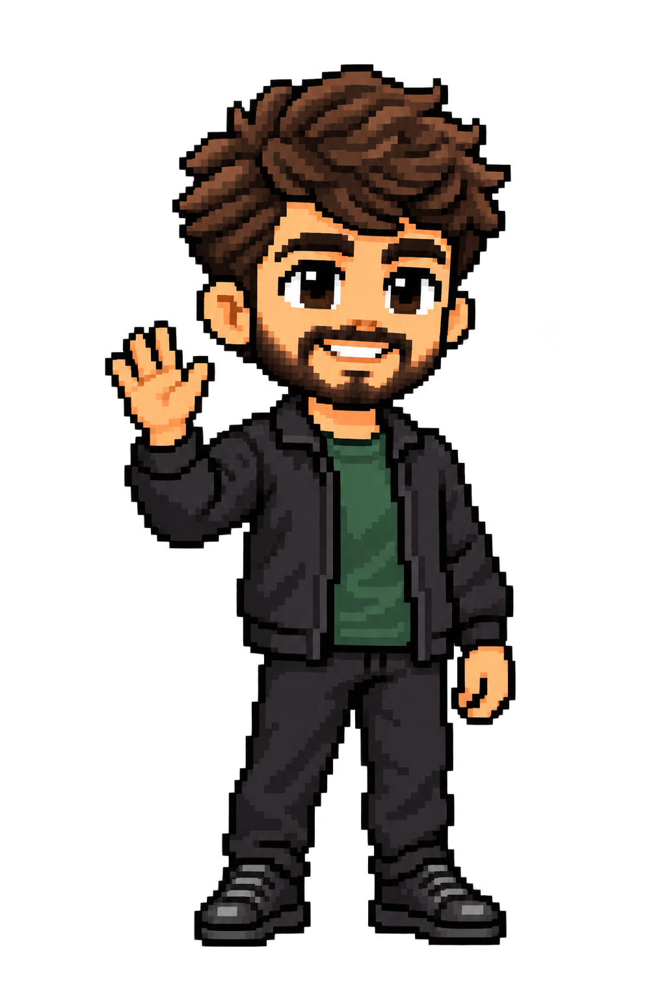
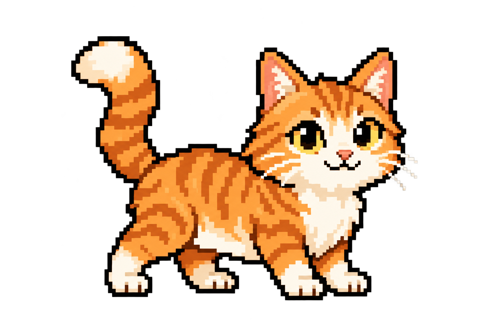
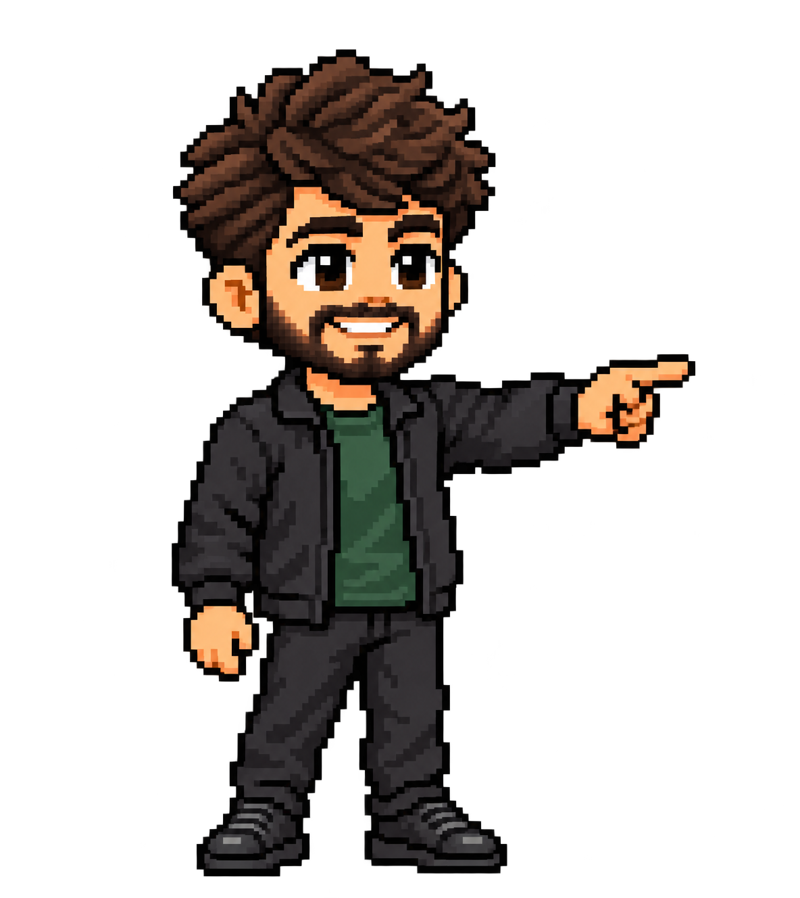
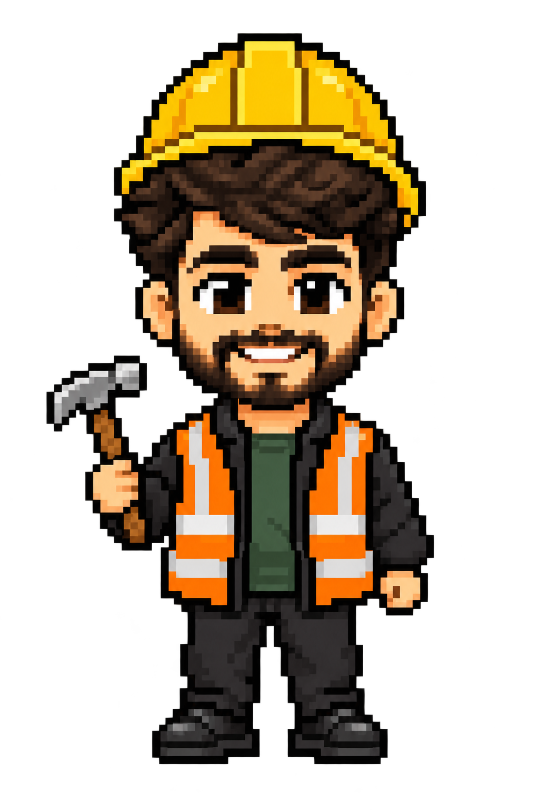

A welcome with a little life.
Establish who Omkar is and offer a clear way into the story or work.
Curious about how things work.
I build software, explore ideas and enjoy the people and stories around them.


Visitor action
Read, scroll or choose either destination immediately.
Character motion
One short welcome. The pair settles while the visitor reads; no forced loading delay.
Fallback
Still characters for reduced motion or asset failure. The introduction remains available.
More than a résumé.
Let the visitor discover authentic interests at their own pace.
Things that make me, me.
Curiosity extends beyond the screen. Choose a subject to open a small personal story.

Visitor action
Open a labeled interest and read a short authored detail.
Character motion
A small response to selection, then a quiet pose; Stella rests alongside.
Content boundary
Use real personal details only. Empty interests do not need invented stories.
Every chapter leads somewhere.
A life path with the visitor in control of the pace.
Where I've been. Where I'm going.
Selected milestone: a short account of what happened and what it meant.

Visitor action
Choose any milestone; a readable chronological alternative remains available.
Character motion
Travel between nearby positions; long jumps settle directly rather than racing.
Mobile
Use a vertical path and reserved character space. Future is explicitly aspiration.
Ideas made real.
Projects should make the problem and engineering decisions tangible.
A collaborative workspace. Open the story to understand the problem, contribution and decisions.
← Previous · 1 of 3 · Next →
Visitor action
Browse with buttons, keyboard or touch; open details deliberately.
Character motion
A brief gesture toward the active project, never over text or controls.
Evidence
Use real previews and verified claims. Preserve selection and focus on return.
Show the thinking.
One small, understandable demonstration of an engineering problem.
What happens when a request is sent twice?
Try a simulated request, then see how protection changes the result.
Illustrative simulation. No real payment or API action.

Visitor action
Experiment and understand the result without prior technical knowledge.
Character motion
Workshop outfit and a short reaction to the result; no interaction depends on him.
Truthfulness
Label the simulation and verify any connection to the real project before publication.
A story still in progress.
End with current interests and a direct invitation to connect.
Currently building, learning and listening.
Dated, curated updates lead naturally to a conversation.

Visitor action
Open a dated source or contact directly. The form remains optional.
Character motion
The pair settles together. A small farewell can occur once, without blocking contact.
Content boundary
Do not call curated updates live; hide empty categories.
Prove the motion, then choose the tool.
Build one test sequence: enter → walk → wave → idle → react to a button. Compare its character consistency, smoothness, mobile clearance and loading cost with the current sprites. Rive is a candidate; Next.js and existing Motion remain the website foundation.
Experience
Characters have clear intent and do not obscure content. Navigation never depends on animation.
Accessibility
Reduced motion uses still poses. Keyboard, touch and visible focus work independently of the character.
Decision gate
Approve the story and motion proof before applying a character system across the site.